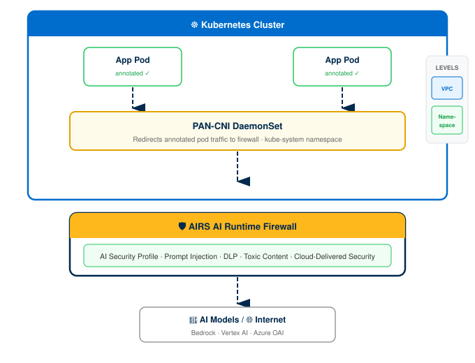
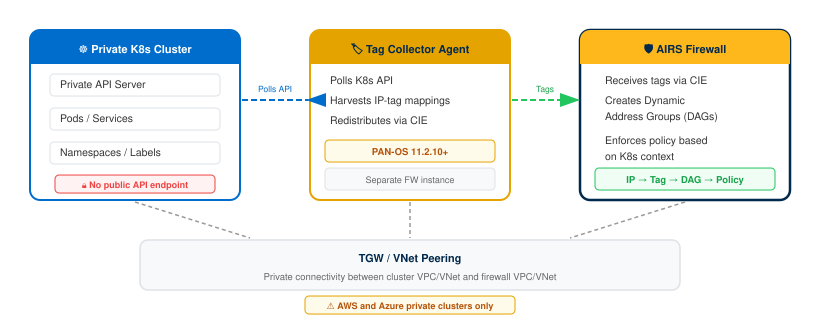

Prisma AIRS: K8s & Container Protection
End-to-end guide: PAN-CNI Helm installation through validated Kubernetes traffic inspection with IP tag harvesting
This guide is a bolt-on module for the AIRS Network Intercept Core Guide. It covers post-deployment Kubernetes and container protection: configuring the firewall to handle K8s traffic, installing the PAN-CNI Helm chart, and optionally deploying Tag Collector agents for private cluster discovery.
Prerequisites: An AIRS AI Runtime Firewall must already be deployed and connected to SCM or Panorama. Security profiles must be configured. Complete the Core Guide first.
Management platforms: Steps are tabbed for SCM and Panorama where the UI workflow differs. Cloud-specific tabs (AWS / Azure / GCP) appear where routing or NAT configuration diverges.
Architecture Overview
Prisma AIRS protects Kubernetes workloads by deploying a Container Network Interface (CNI) plugin into each cluster. The PAN-CNI plugin intercepts pod traffic and redirects it through the AIRS AI Runtime Firewall for inspection before forwarding to the destination.
The PAN-CNI plugin installs as a DaemonSet in the kube-system namespace. It chains onto the cluster's existing CNI (Calico, Azure CNI, VPC CNI, etc.) without replacing it. When a pod is annotated for protection, PAN-CNI adds routing rules that redirect the pod's egress and ingress traffic through the AIRS firewall.
PAN-CNI traffic redirection through the AIRS firewall:

Two protection levels:
- VPC-level protection — secures all applications within the VPC. A single Helm chart covers the entire cluster. Annotate namespaces with
paloaltonetworks.com/firewall=pan-fw. - Namespace-level protection — provides granular control per application namespace with traffic steering inspection and CIDR-based rules. Separate Helm charts are generated for each protected namespace during deployment.
Private Kubernetes clusters (with no public API server endpoint) cannot be directly monitored by the firewall for IP-to-tag mappings. A Tag Collector Agent deploys as a separate firewall instance that connects to private cluster API servers, harvests IP-tag information for pods, services, and namespaces, and redistributes those tags to the AIRS firewall.
Tag Collector Agent architecture for private Kubernetes clusters:

In PAN-OS 11.2.10-h2 and later, the tag collector only harvests IP tags from AWS and Azure private Kubernetes clusters. Public clusters on AWS/Azure and all GCP clusters are not supported for tag collection. Public cluster IPs can be discovered through standard cloud asset discovery instead.
For private cloud container platforms (OpenShift, Rancher), the PAN-CNI plugin integrates as a secondary CNI via Multus CNI chaining. This path requires Panorama management with PAN-OS 11.2.5 or later and Kubernetes plugin 3.0.4.
Key differences from public cloud deployments:
- Helm chart is sourced from the Prisma AIRS Helm GitHub repository, not the SCM Terraform download.
- A
NetworkAttachmentDefinitionmust be deployed in each application namespace for Multus. - Annotation uses
k8s.v1.cni.cncf.io/networks=pan-cniinstead of the standard PAN annotation. - Single-arm deployment (trust interface only) with the firewall trust IP in
values.yaml.
Phase 1: Prerequisites
The AIRS AI Runtime Firewall must be deployed in the target cloud environment, connected to SCM or Panorama, and operational before configuring K8s protection.
- Confirm the firewall is deployed by following the AIRS Network Intercept Core Guide through Phase 4 (Deploy Firewall).
- Verify the firewall appears as
Connectedin SCM under Workflows → NGFW Setup → Device Management, or in Panorama under Panorama → Managed Devices → Summary. - Confirm AI Security Profiles are configured by completing Phase 5 (Security Config) of the Core Guide.
Firewall status shows Connected in the management platform. AI Security Profiles exist in the configuration scope assigned to this firewall.
The Helm chart installation and pod annotation steps require local tooling and cluster administrative access.
- Install Helm v3 on the workstation.
- Confirm
kubectlis installed and configured with credentials for the target cluster(s). - Verify cluster admin permissions:
The output must be
kubectl auth can-i create daemonset -n kube-systemyes.
GKE Autopilot clusters do not support Helm deployments due to restrictions on modifying the kube-system namespace. Use GKE Standard clusters instead.
helm version returns v3.x. kubectl auth can-i create daemonset -n kube-system returns yes.
Panorama-managed deployments require specific software versions for K8s protection features, including the Kubernetes plugin for IP tag harvesting.
- Confirm Panorama software version is
11.2.5or later. - Install Kubernetes plugin version
3.0.4or later. Navigate to Panorama → Plugins and verify the installed version. - For IP tag harvesting (Phase 5), Kubernetes plugin version
3.1.0or later is required.
SCM-managed deployments do not require a separate Kubernetes plugin. The tag collector functionality is built into the AIRS firewall deployment Terraform.
Panorama version shows 11.2.5 or later. Kubernetes plugin shows 3.0.4 or later under Panorama → Plugins.
The firewall needs static routes for pod and service subnets to properly route Kubernetes traffic. Gather these CIDRs from each target cluster before proceeding.
- Open the Amazon EKS Console.
- Select the target cluster.
- Navigate to the Networking tab.
- Record the Service IPv4 range (e.g.,
172.20.0.0/16). - Record the VPC CIDR and Subnet CIDRs from the VPC configuration.
- For custom CNI configurations, run:
kubectl get nodes -o jsonpath='{.items[0].spec.podCIDR}'
- Open the Azure Portal.
- Navigate to Kubernetes services → select the target cluster.
- Under Properties, record the Service CIDR and Pod CIDR (if using kubenet; Azure CNI uses the VNet subnet range for pods).
- Record the VNet address space from Virtual Networks → select the cluster VNet.
- Open the GKE Console.
- Select the target cluster.
- Record the Cluster Pod IPv4 range (e.g.,
10.40.0.0/14). - Record the IPv4 Service range (e.g.,
172.16.0.0/24).
Pod CIDR and Service CIDR values are recorded for each target cluster. These values are required in Phase 2 (static routes) and Phase 3 (Helm values.yaml).
Phase 2: Firewall Interface & Routing Configuration
Configure the AIRS firewall interfaces, zones, logical routers, NAT policies, and security policies to handle Kubernetes cluster traffic. The configuration varies by cloud provider due to differences in load balancer health probes, routing architecture, and overlay handling.
- AWS — uses GWLB endpoints. Overlay routing requires dual interfaces; non-overlay uses single-arm (trust only).
- Azure — requires two logical routers (
vr-private/vr-public) because the Azure health probe (168.63.129.16/32) fails with a single router. Includes inbound and outbound NAT. - GCP — standard dual-interface with a single logical router. Internal Load Balancer health checks via loopback.
AWS deployments use GWLB (Gateway Load Balancer) endpoints for traffic interception. The interface configuration depends on whether overlay routing is enabled.
Configure Layer 3 Ethernet interfaces for the trust and untrust data planes. Overlay routing deployments require both interfaces; non-overlay deployments use trust only.
- Log in to Strata Cloud Manager.
- Navigate to Configuration → NGFW and Prisma Access → Device Settings → Interfaces.
- Set the Configuration Scope to the AI Runtime Security folder.
- Click Add Interface.
- Configure
ethernet1/1(trust):Field Value Interface Name ethernet1/1Interface Type Layer3Zone trustIPv4 Dynamic (DHCP Client) - For overlay routing: uncheck Automatically create default route pointing to default gateway provided by server on
ethernet1/1. - For overlay routing: configure
ethernet1/2(untrust) with the same settings except Zone =untrust. Leave the default route checkbox enabled onethernet1/2.
Non-overlay routing deployments require only ethernet1/1 (trust). Do not configure ethernet1/2. The GWLB handles all traffic steering without a separate untrust interface.
Interface(s) appear under Device Settings → Interfaces with status Layer3 and DHCP Client assigned.
- Navigate to Configuration → NGFW and Prisma Access → Device Settings → Zones.
- Click Add Zone.
- Create a
trustzone with Interface TypeLayer3and addethernet1/1. - For overlay routing: create an
untrustzone and addethernet1/2. - Click Save.
Zone(s) appear under Device Settings → Zones with the correct interfaces assigned.
Create logical routers with static routes for RFC 1918 address space and Kubernetes pod/service subnets.
- Navigate to Configuration → NGFW and Prisma Access → Device Settings → Routing.
- Create
trust-logical-routerwith interfaceethernet1/1. - In Advanced Settings, add these IPv4 Static Routes for
trust-logical-router:
| Name | Destination | Interface | Next Hop |
|---|---|---|---|
10.x-route | 10.0.0.0/8 | ethernet1/1 | IP Address (eth1/1 gateway) |
172.16.x-route | 172.16.0.0/12 | ethernet1/1 | IP Address (eth1/1 gateway) |
192.168.x-route | 192.168.0.0/16 | ethernet1/1 | IP Address (eth1/1 gateway) |
default | 0.0.0.0/0 | None | Next Logical Router: untrust-lr |
- For overlay routing: create
untrust-logical-routerwith interfaceethernet1/2and add reverse static routes:
| Name | Destination | Interface | Next Hop |
|---|---|---|---|
10.x-route | 10.0.0.0/8 | None | Next Logical Router: trust-lr |
172.16.x-route | 172.16.0.0/12 | None | Next Logical Router: trust-lr |
192.168.x-route | 192.168.0.0/16 | None | Next Logical Router: trust-lr |
- Click Save.
Logical router(s) appear under Routing with the static routes listed above. The default route on trust-logical-router points to the untrust logical router.
Source NAT translates outbound Kubernetes traffic from trust to untrust. This step is required only for overlay routing deployments.
- Navigate to Configuration → NGFW and Prisma Access → Network Policies → NAT.
- Click Add.
- Configure the NAT rule:
| Section | Field | Value |
|---|---|---|
| General | Name | trust-to-untrust-zone-nat |
| Original Packet | Source Zone | trust |
| Original Packet | Destination Zone | untrust |
| Original Packet | Destination Interface | ethernet1/2 |
| Translated Packet | Translation | Source Address Only |
| Translated Packet | Source Translation Type | Dynamic IP and Port |
| Translated Packet | Interface | ethernet1/2 |
- Click Save.
Non-overlay routing deployments do not need a NAT rule. The GWLB handles traffic steering at the VPC level without address translation on the firewall.
NAT rule trust-to-untrust-zone-nat appears in the NAT policy list with Source Zone trust and Destination Zone untrust.
- Navigate to Configuration → NGFW and Prisma Access → Security Services → Security Policy.
- Click Add Rule.
- Set the action to Allow.
- Attach the AI Security Profile Group configured in the Core Guide Phase 5.
- Click Save.
Security policy rule appears with action Allow and the AI Security Profile Group attached.
- Navigate to Configuration → Push Config.
- Select the AI Runtime Security managed folder.
- Click Push.
- Wait for the push to complete successfully.
Push status shows Completed with no errors. The firewall is now configured to handle Kubernetes traffic.
Panorama-managed AWS deployments use a single-arm architecture with only the trust interface (ethernet1/1).
- Log in to Panorama.
- Navigate to Network → Interfaces.
- Set the Configuration Scope to the AI Runtime Security template.
- Click Add Interface and configure:
| Field | Value |
|---|---|
| Interface Name | ethernet1/1 |
| Interface Type | Layer3 |
| Logical Router | vr-private |
| Zone | trust |
| IPv4 | DHCP Client |
| Management Profile | HTTPS enabled |
- Click Add.
ethernet1/1 appears under Network → Interfaces as Layer3 with DHCP Client and trust zone.
- Navigate to Network → Zones.
- Click Add Zone.
- Set Name to
trust, Type toLayer3, and addethernet1/1. - Click Save.
trust zone appears with ethernet1/1 listed.
- Navigate to Policies → Security.
- Click Add and set the action to Allow.
- Attach the AI Security Profile Group.
- Navigate to Commit → Commit and Push.
- Select the AI Runtime Security device group and push.
Commit and Push completes successfully. The security policy with the AI profile group is active on the firewall.
Azure deployments require two logical routers (vr-private and vr-public) because the Azure health probe (168.63.129.16/32) fails with a single virtual router. Both inbound and outbound NAT rules are required.
A single virtual router causes health probe failures in Azure. Always create separate vr-private (for ethernet1/1) and vr-public (for ethernet1/2) logical routers with health probe routes (168.63.129.16/32) on both.
- Log in to Strata Cloud Manager.
- Navigate to Configuration → NGFW and Prisma Access → Device Settings → Interfaces.
- Set the Configuration Scope to the AI Runtime Security folder.
- Configure
ethernet1/1(trust):
| Field | Value |
|---|---|
| Interface Type | Layer3 |
| Logical Router | vr-private |
| Zone | trust |
| IPv4 | DHCP Client |
| IPv4 Enabled | Yes |
- Configure
ethernet1/2(untrust):
| Field | Value |
|---|---|
| Interface Type | Layer3 |
| Logical Router | vr-public |
| Zone | untrust |
| IPv4 | DHCP Client |
| Auto Default Route | Enabled (eth1/2 only) |
- Configure a Loopback interface for ILB health checks:
- Set Zone to
trustfor private /untrustfor public logical router. - In IPv4s, enter the ILB private IP address (from the
security_projectTerraform output). - Under Advanced Settings → Management Profile, add
allow-health-checkswith HTTPS enabled.
- Set Zone to
- Click Save.
Two Ethernet interfaces (ethernet1/1 / ethernet1/2) and a loopback interface appear with the correct zones and logical router assignments.
Create vr-private and vr-public with application routes, default routes, pod/service subnet routes, and health probe routes.
- Navigate to Configuration → NGFW and Prisma Access → Device Settings → Routing.
- Create
vr-privatewith interfaceethernet1/1. - Add these static routes to
vr-private:
| Name | Destination | Next Hop | Interface |
|---|---|---|---|
app-vnet | Application VNet CIDR | IP Address (eth1/1 gateway) | ethernet1/1 |
pod_route | Pod IPv4 CIDR | IP Address (eth1/1 gateway) | ethernet1/1 |
service_route | Service IPv4 CIDR | IP Address (eth1/1 gateway) | ethernet1/1 |
health-probe | 168.63.129.16/32 | IP Address (eth1/1 gateway) | ethernet1/1 |
default | 0.0.0.0/0 | Next Router: vr-public | None |
- Create
vr-publicwith interfaceethernet1/2and add:
| Name | Destination | Next Hop | Interface |
|---|---|---|---|
app-vnet | Application VNet CIDR | Next Router: vr-private | None |
pod_route | Pod IPv4 CIDR | Next Router: vr-private | None |
service_route | Service IPv4 CIDR | Next Router: vr-private | None |
health-probe | 168.63.129.16/32 | IP Address (eth1/2 gateway) | ethernet1/2 |
default | 0.0.0.0/0 | IP Address (eth1/2 gateway) | ethernet1/2 |
- Click Save.
The gateway IP is the first usable IP in the subnet range (e.g., 192.168.1.1 for a /24 subnet). Find it in the Azure Portal under Virtual Networks → [Your VNet] → Subnets.
Both vr-private and vr-public appear under Routing with all static routes including the 168.63.129.16/32 health probe route.
Azure requires both inbound DNAT and outbound source NAT rules.
- Navigate to Configuration → NGFW and Prisma Access → Network Policies → NAT.
- Inbound NAT (
inbound-web):- Source Zone:
untrust - Destination Zone:
trust, Interface:any, Address: ELB public IP - Translation:
Both— Source: Dynamic IP and Port onethernet1/1, Destination: Static IP translation
- Source Zone:
- Outbound NAT (
outbound-internet):- Source Zone:
trust, Source Addresses: app-vnet CIDR + K8s pod CIDRs - Destination Zone:
untrust, Interface:any - Translation: Source Address Only — Dynamic IP and Port on
ethernet1/2
- Source Zone:
- Click Save.
Two NAT rules appear: inbound-web (untrust → trust) and outbound-internet (trust → untrust).
- Navigate to Security Services → Security Policy → Add Rule.
- Set the action to Allow. Attach the AI Security Profile Group.
- Ensure the policy allows health checks from the Azure Load Balancer pool to the ILB IP.
- Navigate to Configuration → Push Config and push to the AI Runtime Security folder.
Push completes successfully. Security policy with Allow action and AI profile group is active.
Follow the same configuration as the SCM path above, but in the Panorama UI:
- Log in to Panorama.
- Configure interfaces under Network → Interfaces. Use
lr-private/lr-publicas logical router names (Panorama convention). - Create
trustanduntrustzones under Network → Zones. - Configure dual logical routers (
lr-privateandlr-public) under Network → Logical Routers with the same static routes as the SCM path (including168.63.129.16/32health probe routes). - Create inbound and outbound NAT rules under Policies → NAT.
- Create a security policy under Policies → Security with
Allowaction and AI profile group attached. - Navigate to Commit → Commit and Push. Select the AI Runtime Security device group.
Commit and Push completes successfully. Verify firewall connectivity in Panorama → Managed Devices.
GCP deployments use a standard dual-interface configuration with a single logical router and ILB health checks via a loopback interface.
- Log in to Strata Cloud Manager.
- Navigate to Configuration → NGFW and Prisma Access → Device Settings → Interfaces.
- Set the Configuration Scope to the AI Runtime Security folder.
- Configure
ethernet1/1andethernet1/2as Layer 3 DHCP Client interfaces:ethernet1/1: Zone =trustethernet1/2: Zone =untrust
- Configure a Loopback interface:
- Enter the ILB private IP in IPv4s.
- Set Zone to
trust. - Set Virtual Router to
default(same asethernet1/2).
- Click Save.
Two Ethernet interfaces and one loopback interface appear with correct zone assignments.
- Create
trustanduntrustzones under Device Settings → Zones. - Create a Logical Router with both
ethernet1/1andethernet1/2. - Add a static route for the ILB IP using the trust interface gateway IP as the next hop.
- Add static routes for pod and service subnets (from Step 1.4) with next hop set to
ethernet1/2(trust) and the trust subnet gateway IP. - Add a source NAT rule: Source Zone
trust, Destination Zoneuntrust, Interfaceethernet1/1, Dynamic IP and Port. - Create a security policy with
Allowaction and the AI Security Profile Group. Ensure health checks from the GCP Load Balancer to the ILB IP are permitted. - Navigate to Configuration → Push Config and push.
Push completes successfully. Logical router, NAT rule, and security policy are active on the firewall.
Follow the same dual-interface, single-router configuration as the SCM path, using the Panorama UI:
- Configure interfaces under Network → Interfaces.
- Configure a loopback with the ILB private IP.
- Create zones under Network → Zones.
- Create a logical router under Network → Logical Routers with static routes for ILB, pod subnets, and service subnets.
- Create a source NAT rule under Policies → NAT.
- Create a security policy under Policies → Security with
Allowaction. - Navigate to Commit → Commit and Push.
Advanced routing is enabled by default on AIRS AI Runtime Firewall. Configure a Logical Router instead of a Virtual Router.
Commit and Push completes successfully. Firewall shows Connected in Panorama.
Phase 3: Install Helm Chart (PAN-CNI)
The PAN-CNI Helm chart deploys a DaemonSet that intercepts annotated pod traffic and redirects it to the AIRS firewall. The chart is included in the Terraform download from SCM, or cloned from GitHub for private cloud deployments.
- Extract the Terraform download:
tar -xvzf <your-terraform-download.tar.gz> - Navigate to the Helm directory based on protection level:
- VPC-level:
cd <unzipped-folder>/architecture/helm - Namespace-level:
cd <unzipped-folder>/architecture/helm-<app-name>Namespace-level deployments generate separate Helm charts per protected namespace. Repeat the install process for each.
- VPC-level:
For private cloud deployments, clone the Helm chart from github.com/PaloAltoNetworks/prisma-airs-helm instead of extracting from the Terraform download.
The directory contains Chart.yaml, values.yaml, and a templates/ subdirectory.
The values.yaml file contains cluster-specific parameters that must be verified before installation.
AWS deployments must update the GWLB endpoint IPs. These are created during the Terraform application_project deployment.
- Navigate to the AWS VPC Console → Endpoints.
- Under the Subnets tab, copy the IP addresses for each availability zone.
- Edit
values.yaml:# GWLB VPC endpoint zone1 IP address. endpoints1: "10.0.1.100" endpoints1zone: us-east-1a # GWLB VPC endpoint zone2 IP address. endpoints2: "10.0.2.100" endpoints2zone: us-east-1b # PAN CNI image. cniimage: gcr.io/pan-cn-series/airs/pan-cni:latest # Resource namespace name. namespace: kube-system # Kubernetes ClusterID value range 1-2048. clusterid: 1 - Set
endpoints1andendpoints2to the GWLB endpoint IPs from the console. - Set
clusteridto a unique value (1–2048) for this cluster.
Azure and GCP deployments do not require GWLB endpoint configuration. Review and adjust the clusterid and namespace values.
- Open
values.yaml. - Set
clusteridto a unique value (1–2048) for this cluster. - Confirm
namespaceis set tokube-system.
For AKS clusters, enable Bring your own Azure virtual network in the Azure Portal under Kubernetes services → [Cluster] → Settings → Networking → Network configuration → Azure CNI. This allows PAN-CNI to discover Kubernetes-related VNets.
Private cloud (OpenShift/Rancher) uses the firewall trust interface IP instead of GWLB endpoints.
# Firewall trust interface IP Address for on-prem
endpoints: 10.101.255.253
# PAN CNI image
cniimage: gcr.io/pan-cn-series/airs/pan-cni:latest
# AI firewall trust CIDR (optional, reduces hops for east-west)
fwtrustcidr: ""
# Resource namespace name
namespace: kube-system
# Kubernetes Cluster ID (1-2048)
clusterid: 1Set endpoints to the trust interface IP of the standalone firewall. For active/passive HA, use the active-primary trust IP.
values.yaml contains valid endpoint IPs (or firewall trust IP for private cloud), the correct availability zones, and a unique clusterid.
- For VPC-level protection:
helm install ai-runtime-security helm --namespace kube-system --values helm/values.yaml - For namespace-level protection:
helm install ai-runtime-security helm-<app-name> --namespace kube-system --values helm-<app-name>/values.yamlRepeat for each namespace-specific Helm chart.
Installing the Helm chart deploys the PAN-CNI DaemonSet, but pod traffic is not redirected until namespaces or pods are annotated in Step 3.5. The CNI is dormant until annotations trigger protection.
Helm reports STATUS: deployed in the output.
Run these verification commands to confirm all PAN-CNI components are running.
- List Helm releases:
helm list -AExpected output:
NAME NAMESPACE REVISION UPDATED STATUS CHART APP VERSION ai-runtime-security kube-system 1 2024-08-13 07:00 PDT deployed ai-runtime-security-0.1.0 11.2.2 - Check pod status:
kubectl get pods -A | grep pan-cniPods named
pan-cni-*****must showRunning. - Check endpoint slices:
kubectl get endpointslice -n kube-system | grep pan - Check Kubernetes resources:
kubectl get serviceaccounts -n kube-system | grep pan kubectl get secrets -n kube-system | grep pan kubectl get svc -n kube-system | grep pan
All pan-cni-***** pods are Running. Resources pan-cni-sa (service account), pan-plugin-user-secret (secret), and pan-ngfw-svc (service) exist in the kube-system namespace. Endpoint slices show ILB or firewall trust IP addresses.
Annotations tell PAN-CNI which pods to redirect through the firewall. Without annotation, pods are not protected.
- For VPC-level protection — annotate each namespace:
kubectl annotate namespace <namespace> paloaltonetworks.com/firewall=pan-fw - For namespace-level protection — annotate all pods:
kubectl annotate pods --all paloaltonetworks.com/subnetfirewall=ns-secure/bypassfirewallImportant: Annotation Value NamingThe annotation value
ns-secure/bypassfirewallis misleading: it does not bypass the firewall. This value instructs PAN-CNI to redirect the pod's traffic through the firewall for namespace-level subnet-based inspection. The name is a legacy artifact from the internal CNI routing logic. - For OpenShift — use the Multus CNI annotation instead:
kubectl annotate namespace <namespace> k8s.v1.cni.cncf.io/networks=pan-cniAlso deploy the
NetworkAttachmentDefinitionin each application namespace:kubectl apply -f pan-cni-net-attach-def.yaml -n <target-namespace>
Run kubectl describe namespace <namespace> and confirm the annotation appears (e.g., paloaltonetworks.com/firewall=pan-fw).
Existing pods must be restarted after annotation for PAN-CNI to inject its routing rules. New pods created after annotation are automatically protected.
- Restart pods in the annotated namespace:
kubectl rollout restart deployment -n <namespace> - Wait for pods to reach
Runningstate:kubectl get pods -n <namespace> -w
All restarted pods show Running status. Pod traffic now routes through the AIRS firewall for inspection.
Phase 4: Deploy Tag Collector Agent (Optional)
The Tag Collector Agent enables IP tag harvesting from private Kubernetes clusters. This is optional; skip this phase if all target clusters have public API server endpoints, or if granular DAG-based security policies are not required.
In PAN-OS 11.2.10-h2 and later, the tag collector only harvests IP tags from AWS and Azure private Kubernetes clusters. Public clusters on AWS/Azure and all GCP clusters are not supported for tag collection.
The SCM wizard generates the Terraform template for the Tag Collector Agent infrastructure.
- Log in to Strata Cloud Manager.
- Navigate to AI Security → AI Runtime Firewall.
- Click the + icon and select Add Agent Deployment.
- Select AWS and click Next.
- Enter a descriptive Name.
- Select the Cloud Account and Cloud Region. Click Next.
- Enter the VPC CIDR for the tag collector deployment.
- Enter Allowed Management Access CIDR ranges.
- Select the Zone.
- Configure the Transit Gateway (TGW):
- New TGW: Enter the Autonomous System Number, select the AWS account, and select accounts with private workloads.
- Existing TGW: Select the TGW Cloud Account and TGW ID, then select accounts with private workloads.
- Configure Management IP, RAM, SSH Key, Device ID/PIN, SCM folder, PAN-OS version, VM size, and Authcode.
- Click Next.
- Enter a Terraform Template Name and download the template.
The Terraform template ZIP file downloads successfully. It contains architecture/tgw_project, architecture/tc_project, and architecture/tc_iam_project subdirectories.
Deploy the Terraform templates in order: tgw_project → tc_project → tc_iam_project.
- Extract the download and navigate to
architecture/. - If creating a new TGW, deploy
tgw_projectfirst:cd tgw_project terraform init && terraform plan && terraform apply - Copy the TGW ID from the output into
tc_project/terraform.tfvars:id = "<new-tgw-unique-identifier>" - Deploy
tc_project:cd ../tc_project terraform init && terraform plan && terraform apply - Deploy
tc_iam_project:cd ../tc_iam_project terraform init && terraform plan && terraform apply
All three Terraform applies complete without errors. The tag collector VM is running in the AWS console.
After deploying all three Terraform templates, manually configure TGW attachments and route tables to allow the tag collector to communicate with private clusters.
- Create a TGW attachment for each private cluster VPC. Add routes to the route table for the tag collector CIDR.
- Create a TGW route table for the tag collector TGW attachment. Add routes for each private cluster CIDR.
- Update the tag collector security group to allow traffic from the private cluster management CIDR.
- Update the private cluster security group to allow traffic from the tag collector management CIDR.
TGW attachments show Available in the AWS console. Route tables contain entries for both the tag collector and private cluster CIDRs.
- Log in to Strata Cloud Manager.
- Navigate to AI Security → AI Runtime Firewall.
- Click + and select Add Agent Deployment.
- Select Azure and click Next.
- Enter Name, Cloud Account, Cloud Region. Click Next.
- Enter VPC CIDR, management access CIDRs.
- Select accounts with private workloads from Accounts to pull IP/Tags from.
- Configure Management IP, SSH Key, Device ID/PIN, SCM folder, PAN-OS version, VM size, and Authcode.
- Click Next, enter Terraform Template Name, and download.
The Terraform ZIP downloads with architecture/tc_project and architecture/tc_peer_project subdirectories.
- Edit
tc_project/terraform.tfvarswith private cluster details. The private cluster ID format:/subscriptions/<sub-id>/resourceGroups/<rg-name>/providers/Microsoft.Network/virtualNetworks/<private-cluster> - Add VNet details for each private cluster in the
vnetsblock. - Update the
private_cluster_dns_tc_peeringblock with each cluster's resource group name and private DNS name. - Deploy
tc_project:cd architecture/tc_project terraform init && terraform plan && terraform apply - Deploy
tc_peer_project:cd ../tc_peer_project terraform init && terraform plan && terraform apply
Both Terraform applies complete without errors. VNet peering shows Connected in the Azure Portal under the tag collector VNet.
Phase 5: Configure IP Tag Harvesting
IP tag harvesting collects Kubernetes metadata (namespace, service, pod labels) and maps them to IP addresses. These tags feed into Dynamic Address Groups (DAGs) for granular security policy enforcement. The configuration path differs significantly between SCM-managed and Panorama-managed firewalls.
- SCM path — the tag collector is deployed as part of the AIRS Terraform and sends IP-tags to SCM via the Cloud Identity Engine (CIE). Configure redistribution in SCM.
- Panorama path — the Kubernetes plugin on Panorama directly connects to cluster API servers. Configure cluster onboarding, monitoring definitions, and notify groups in Panorama.
The AIRS deployment Terraform automatically enables tag collector mode on the firewall. Verify this is active.
- SSH into the tag collector firewall and run:
show system info | match tag-collector-mode
Output shows tag-collector-mode: enabled.
Configure the tag collector to send IP-tags to the correct SCM region.
- View available regions:
request plugins kubernetes set-tag-collector-config region - Set the region:
request plugins kubernetes set-tag-collector-config region <region_name>
The command completes without error. The region name matches the SCM tenant region.
Provide the tag collector with credentials to access each Kubernetes cluster's API server.
- Transfer the service account credential file to the tag collector (via SCP or base64 encoding).
- Configure the cluster:
set deviceconfig plugins kubernetes setup \ cluster-credentials <cluster_name> \ api-server-address <cluster-external-endpoint-ip> \ cluster-type [GKE|AKS|EKS] \ cluster-credential-file \ [GCP-service-account-json|AWS-credentials-file|Azure-credentials-file] <filename> labels no-labels
Use the cluster's external endpoint IP. For GKE: Kubernetes Engine → Clusters → [Cluster] → External endpoint. For EKS: EKS Console → [Cluster] → API server endpoint. For AKS: Kubernetes services → [Cluster] → Properties → API server address.
The command completes without error. Cluster name is registered in the plugin configuration.
- Create a monitoring definition:
set deviceconfig plugins kubernetes \ monitoring-definition <mon_def_name> \ cluster-credentials <cluster_name> \ enable yesOne-to-One MappingEach monitoring definition maps to exactly one cluster. One monitoring definition per cluster, one cluster per monitoring definition.
- Commit:
commit - Verify cluster status:
show plugins kubernetes status
Cluster status shows Connected.
Configure the tag collector as an Identity Redistribution agent so the AIRS firewall receives the harvested IP-to-tag mappings.
- Log in to Strata Cloud Manager.
- Navigate to Configuration → NGFW and Prisma Access → Identity Services → Identity Redistribution.
- Set the Configuration Scope.
- Click Add Agent.
- Configure:
Field Value Name Descriptive name for the agent Enabled Yes Host Tag collector IP address Port 5007(default)Data Type Mapping Select IP to Tag - Click Save, then Commit, then Push Config.
- If the
useridservice is disabled on the tag collector, enable it:configure set deviceconfig system service disable-userid-service no commit - Verify redistribution client connectivity:
show redistribution service client all
Redistribution client output shows the AIRS firewall IP with Status: idle and Redistribution: ITUH (indicating IP-to-User/Host/Tag mapping is active).
- Navigate to Configuration → NGFW and Prisma Access → Objects → Address → Address Groups.
- Click Add Address Group.
- Enter a Name and Description.
- Set Type to
Dynamic. - Click Add Match Criteria.
- Switch to the CIE tab to view Kubernetes tags sent from the tag collector.
- Select the required Kubernetes tags (e.g.,
k8s.ns_<namespace>,k8s.svc_<service>). - Click Save.
The Dynamic Address Group appears under Address Groups with Dynamic type and CIE-based match criteria showing Kubernetes tags.
- Navigate to Security Services → Security Policy → Add Rule.
- Enter a Name and Description.
- Under Source → Addresses, select the Dynamic Address Group created above.
- Set the action to Allow or Deny.
- Attach the AI Security Profile Group.
- Click Save.
- Select Push Config to push to the AIRS firewall.
After a successful push, verify IP-tags are registered on the firewall:
show object registered-ip allOutput should show registered IPs with Kubernetes tags like k8s.ns_gmp-system and k8s.svc_metrics-server.
The Panorama Kubernetes plugin connects directly to cluster API servers to harvest IP-tag information.
- Log in to Panorama.
- Navigate to Panorama → Plugins → Kubernetes → Setup → General.
- Ensure Enable Monitoring is checked.
- Set the Monitoring Interval (30–300 seconds; default is 30).
- Navigate to Setup → Cluster and click Add Cluster.
- Enter a Name (up to 20 characters, cannot be changed after creation).
- Enter the API Server Address (hostname or IP:port; port 443 is default).
- Select the environment Type (AKS, EKS, GKE, Native Kubernetes, OpenShift, or Other).
- Upload the service account Credential file (
plugin-svc-acct.json). See Create Service Accounts for Cluster Authentication. - Click OK.
Do not add the same Kubernetes cluster to more than one Panorama appliance (or HA pair). Duplicate registrations cause inconsistencies in IP-to-tag mappings across device groups.
The cluster appears in the Kubernetes plugin cluster list with connection status showing successful authentication.
- Navigate to Panorama → Plugins → Kubernetes.
- Add a Notify Group specifying the device groups that should receive IP-to-tag mappings.
- Add a Monitoring Definition for each onboarded cluster:
- Select the cluster credential.
- Enable monitoring.
- Associate with the Notify Group.
Monitoring Definition shows Enabled with the correct cluster and Notify Group assigned.
- Navigate to Objects → Address Groups → Add.
- Set Type to
Dynamic. - Add match criteria using the Kubernetes tags pushed by the plugin.
- Navigate to Policies → Security → Add.
- Set the Destination Address to the Dynamic Address Group.
- Set the action and attach the AI Security Profile Group.
- Navigate to Commit → Commit and Push.
After Commit and Push, verify tags on the firewall CLI:
show object registered-ip allOutput shows registered IPs with Kubernetes tags (e.g., k8s.ns_<namespace>, k8s.svc_<service>).
Phase 6: Configure Traffic Objects (Optional)
Traffic objects map cloud entities (K8s clusters or VPC endpoints) to zones, enabling zone-based security policy rules that target specific clusters or endpoints. This is optional; basic K8s protection works without traffic objects. Add them when granular per-cluster or per-VPC security policies are required.
Traffic objects create sub-interfaces mapped to zones, enabling per-cluster security policies.
- Log in to Strata Cloud Manager.
- Navigate to Configuration → NGFW and Prisma Access → Objects → Traffic Objects.
- Click Add Traffic Object.
- Configure:
Field Value Name Descriptive name Type K8s Cluster IDorVPC Endpoint IDTraffic Object ID Cluster ID (1–2048, from values.yaml) or VPC Endpoint ID (vpce-xxxxxxxxxxxxxxxxx)Zone Select existing or create new zone Router Select the logical router - Click Save.
- Attach the zone to a security policy rule. Push configuration.
The clusterid value comes from the values.yaml file configured in Phase 3 (Step 3.2). This must match exactly.
The traffic object appears under Objects → Traffic Objects. A sub-interface is created and mapped to the selected zone. The zone can be used in security policy rules for per-cluster enforcement.
- Log in to Panorama.
- Navigate to Network → Traffic Objects.
- Click Add.
- Enter a Name, select the Location (virtual system).
- Set Type to
K8s Cluster IDorVPC Endpoint ID. - Enter the Traffic Object ID (1–2048 for K8s, or
vpce-xxxxxxxxxxxxxxxxxfor VPC). - Select the ingress Zone and Logical Router.
- Click OK.
- Attach the zone to a security policy, then Commit and Push.
Advanced routing is enabled by default on AIRS firewalls. Configure a Logical Router, not a Virtual Router.
Traffic object appears under Network → Traffic Objects. The sub-interface is created and attached to the selected zone. After Commit and Push, the firewall shows the traffic object sub-interfaces.
Validation
- Confirm all PAN-CNI pods are running:
kubectl get pods -A | grep pan-cniEach node should have a
pan-cnipod inRunningstate. - Verify namespace annotations:
kubectl describe namespace <protected-namespace>Annotations should include
paloaltonetworks.com/firewall=pan-fw.
PAN-CNI pods are Running on all cluster nodes. Protected namespaces show the correct annotation.
- On the AIRS firewall CLI, check registered IP-to-tag mappings:
show object registered-ip allExpected output shows pod IPs with Kubernetes tags:
registered IP Tags -------------------------- -------- 10.111.22.108 * "k8s.ns_gmp-system (never expire)" "k8s.ns_gmp-operator (never expire)" 10.111.19.125 * "k8s.svc_metrics-server (never expire)" - Verify the tag collector plugin status (if using SCM path):
show plugins kubernetes status
Registered IPs appear with k8s.ns_*, k8s.svc_*, and other Kubernetes tags. Cluster status shows Connected.
Generate test traffic between protected pods to confirm the firewall is inspecting K8s traffic.
- Enter a secured pod:
kubectl exec -it <pod-name> -n <secured-namespace> -- bash - Send an HTTP request to another secured pod:
wget http://<target-pod-ip> - On the firewall CLI, verify the session:
show session all filter source <source-pod-ip> - Inspect the session detail to confirm the security policy rule is applied:
show session id <session-id>The output should show the security policy rule name (e.g.,
rule: allow-all-E_W).
Sessions appear in the firewall session table with the expected security rule applied. Traffic between secured pods traverses the firewall. AI security inspections are logged in SCM or Panorama monitor views.
- Verify traffic object sub-interfaces on the firewall:
show interface allSub-interfaces created by traffic objects should appear with the assigned zone.
- Verify the traffic object zone appears in security policy matches for cluster-specific traffic.
Traffic object sub-interfaces appear in the interface list. Security policy logs show traffic matching rules that reference the traffic object zone.
Troubleshooting
| Symptom | Cause | Fix |
|---|---|---|
pan-cni pod stuck in CrashLoopBackOff | Invalid values.yaml parameters (wrong endpoint IPs or cluster ID) | Check kubectl logs <pan-cni-pod> -n kube-system. Correct values.yaml and run helm upgrade. |
pan-cni pod stuck in Pending | Insufficient node resources or taints preventing scheduling | Verify node capacity with kubectl describe node. Remove taints if applicable. |
ImagePullBackOff | Cannot pull gcr.io/pan-cn-series/airs/pan-cni:latest | Verify network connectivity to gcr.io. Check if nodes have correct IAM permissions for image pulling. |
| GKE Autopilot cluster | Autopilot restricts kube-system namespace modifications | Use GKE Standard cluster instead. Autopilot is not supported. |
After fixing, all pan-cni pods show Running status.
| Symptom | Cause | Fix |
|---|---|---|
show object registered-ip all returns empty | Tag collector not connected to cluster API | Check show plugins kubernetes status. Verify cluster credentials and API server endpoint. |
| Tags appear on tag collector but not on AIRS firewall | Redistribution agent misconfigured or userid service disabled | Verify redistribution agent config in SCM. Enable userid: set deviceconfig system service disable-userid-service no. |
| Tags appear but Dynamic Address Group is empty | Match criteria do not match the tag format | Tags use format k8s.ns_<namespace>, k8s.svc_<service>. Verify DAG match criteria in SCM/Panorama. |
| Public cluster or GCP cluster tags not appearing | Tag collector only supports AWS/Azure private clusters | This is a platform limitation in PAN-OS 11.2.10-h2+. Use standard cloud asset discovery for public clusters. |
show object registered-ip all returns populated IP-to-tag mappings.
| Symptom | Cause | Fix |
|---|---|---|
Error: INSTALLATION FAILED | Missing cluster admin permissions | Run kubectl auth can-i create daemonset -n kube-system. Must return yes. |
namespace "kube-system" not found | kubectl context pointing to wrong cluster | Verify with kubectl config current-context. Switch context if needed. |
Release already exists | Previous install attempt left a release | Run helm uninstall ai-runtime-security -n kube-system then reinstall. |
helm list -A shows ai-runtime-security with STATUS: deployed.
| Symptom | Cause | Fix |
|---|---|---|
| Tag collector cannot reach private cluster API | TGW attachment or VNet peering not configured | Verify TGW attachments (AWS) or VNet peering status (Azure). Check route tables for correct CIDR entries. |
Tag collector shows Disconnected | Security group / NSG blocking traffic | Update security groups to allow traffic between tag collector and cluster management CIDRs. |
| Redistribution client shows no connection | Port 5007 blocked between tag collector and AIRS firewall | Verify network connectivity on port 5007. Check firewall rules in the cloud provider. |
show plugins kubernetes status shows Connected. show redistribution service client all shows active redistribution clients.
Reference
| Parameter | Description | Default | Required |
|---|---|---|---|
endpoints1 | GWLB VPC endpoint zone 1 IP (AWS only) | "" | AWS: Yes |
endpoints1zone | AWS availability zone for endpoint 1 | us-east-1a | AWS: Yes |
endpoints2 | GWLB VPC endpoint zone 2 IP (AWS only) | "" | AWS: Yes |
endpoints2zone | AWS availability zone for endpoint 2 | us-east-1b | AWS: Yes |
endpoints | Firewall trust interface IP (private cloud only) | 10.101.255.253 | Private: Yes |
cniimage | PAN-CNI container image | gcr.io/pan-cn-series/airs/pan-cni:latest | Yes |
namespace | Kubernetes namespace for PAN-CNI | kube-system | Yes |
clusterid | Unique cluster identifier (1–2048) | 1 | Yes |
fwtrustcidr | Firewall trust CIDR for east-west optimization (private cloud) | "" | No |
All required parameters are set in values.yaml before running helm install.
| Annotation | Protection Level | Apply To |
|---|---|---|
paloaltonetworks.com/firewall=pan-fw | VPC-level | Namespace |
paloaltonetworks.com/subnetfirewall=ns-secure/bypassfirewall | Namespace-level | Individual pods |
k8s.v1.cni.cncf.io/networks=pan-cni | OpenShift (Multus) | Namespace |
The correct annotation is applied for the deployment type. Run kubectl describe namespace <ns> or kubectl describe pod <pod> -n <ns> to confirm.
The tag collector creates tags in these formats for Dynamic Address Group match criteria:
| Tag Format | Description | Example |
|---|---|---|
k8s.ns_<namespace> | Kubernetes namespace | k8s.ns_gmp-system |
k8s.svc_<service> | Kubernetes service | k8s.svc_metrics-server |
k8s.ns_<operator> | Kubernetes operator/controller | k8s.ns_gmp-operator |
Tags are registered with (never expire) lifetime. They update dynamically as pods are created and destroyed.
Run show object registered-ip all on the firewall to see the current tag mappings and their format.
| Cluster Type | PAN-CNI | Tag Harvesting | Notes |
|---|---|---|---|
| EKS (public) | Yes | No | Use cloud asset discovery |
| EKS (private) | Yes | Yes (11.2.10-h2+) | Requires Tag Collector Agent |
| AKS (public) | Yes | No | Use cloud asset discovery |
| AKS (private) | Yes | Yes (11.2.10-h2+) | Requires Tag Collector Agent |
| GKE Standard | Yes | No | GKE tag harvesting not supported |
| GKE Autopilot | No | No | kube-system modifications blocked |
| OpenShift | Yes (Multus) | Yes (Panorama plugin) | Requires PAN-OS 11.2.5+, K8s plugin 3.0.4 |
| Rancher | Yes (Multus) | Yes (Panorama plugin) | Requires PAN-OS 11.2.5+, K8s plugin 3.0.4 |
The target cluster type appears in the supported list above. If not supported for tag harvesting, use standard cloud asset discovery for visibility.
Deployment Checklist
Phase 1: Prerequisites
- AIRS firewall deployed and connected (Core Guide complete)
- AI Security Profiles configured
- Helm v3 and kubectl installed
- Cluster admin access confirmed
- Pod and Service subnet CIDRs recorded
- Panorama version 11.2.5+ and K8s plugin 3.0.4+ (Panorama only)
Phase 2: Firewall Configuration
- Interfaces configured (trust / untrust as applicable)
- Loopback configured with ILB IP (Azure / GCP)
- Zones created and assigned to interfaces
- Logical router(s) with static routes for RFC 1918 + pod/service subnets
- Health probe routes configured (Azure: 168.63.129.16/32)
- NAT policies created (source NAT for overlay; inbound/outbound for Azure)
- Security policy with Allow action and AI profile group
- Configuration pushed successfully
Phase 3: Helm Installation
- Terraform download extracted
- values.yaml updated with GWLB endpoints (AWS) or cluster settings
- Helm chart installed in kube-system namespace
- pan-cni pods Running on all nodes
- Endpoint slices, service accounts, secrets, and services verified
- Namespaces/pods annotated for protection
- Application pods restarted
Phase 4: Tag Collector (Optional)
- Tag collector deployment created in SCM
- Terraform templates deployed in correct order
- TGW/VNet peering configured for private cluster connectivity
- Security groups updated for tag collector communication
Phase 5: IP Tag Harvesting (Optional)
- Tag collector mode enabled
- Cluster credentials configured
- Monitoring definitions created
- Redistribution agent configured (SCM) or Notify Group set (Panorama)
- Dynamic Address Groups created with CIE/K8s tag criteria
- Security policy rules with DAGs pushed
- Registered IPs show K8s tags on firewall CLI
Phase 6: Traffic Objects (Optional)
- Traffic objects created with correct cluster ID / VPC endpoint ID
- Zones assigned and attached to security policies
- Sub-interfaces visible on firewall
Validation
- PAN-CNI pods Running on all nodes
- Namespace annotations confirmed
- IP-to-tag mappings visible (show object registered-ip all)
- Test traffic between secured pods creates firewall sessions
- Security policy rules applied to K8s traffic
- AI security inspections logged in SCM/Panorama